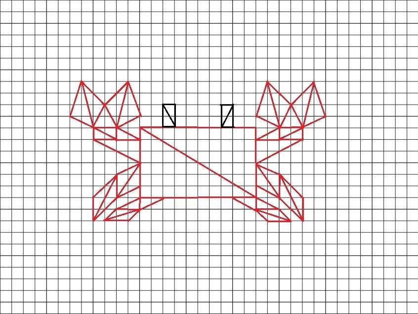
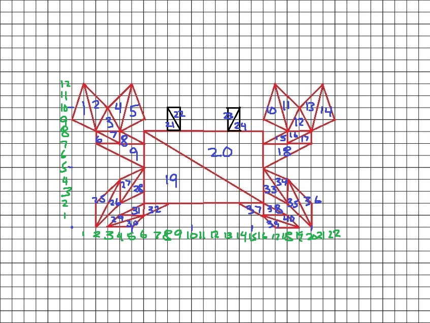

Red
Green
Blue
Alpha
Size
Circle Segments
Extra features
-Hold shift to display a preview of the shape you are about to place. The preview disappears when the shift key is no longer pressed.
Note: after clicking on UI (such as a button or slider), you have to click on a blank area outside of the canvas for the shape preview to work again (I think some weird interaction with events and UI)
-Added an Undo button that removes the last shape that was placed
-Added a slider for alpha to allow transparent paint
-Added a function to scale and convert a 2D coordinate system into coordinates for the WebGL canvas
-The points in the picture (part 12) are added to the point list (so they can be undone using the Undo button too)
 